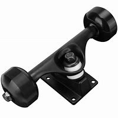

Las partes de los skates

Los Rodamientos
Los rodamientos es un elemento mecánico con bolas protegidas por un escudo o sello que ayudan a reducir la fricción que se produce entre el eje y las ruedas. Para su clasificación se siguen los estándares ABEC (Annular Bearing Engineering Council) que miden la precisión y la tolerancia de las bolas del rodamiento en diferentes categorías: 1,3,5,7 y 9. La 1 es la que menos precisión tiene, pero mayor tolerancia, por lo que a medida que subimos de categoría la precisión será mayor y la tolerancia menor. Normalmente se utilizan la 1, 3 y 5, ya que las otras solo se usan si queremos dedicarnos a algún estilo de velocidad. La diferencia práctica consiste en que si alcanzamos una velocidad determinada y dejamos de empujarnos con los pies, si llevamos unos rodamientos del 1 te detendrás antes que si llevas del 5. También debemos tener en cuenta que cuanto mayor precisión más frágiles son, por lo que si vamos a estar haciendo trucos en skateparks o bordillos por ejemplo, donde puedan golpearse es probable que terminen fallando.
·Las partes del skate
·La tabla
·La lija
·Las ruedas
·Los ejes